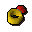
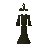
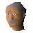

Ruby ring

| Config name | ruby_ring |
| Item id | 1641 |
| Value | 2025 gp |
| Weight | 6g |
| Members | No |
| Tradeable | Yes |
| Stackable | No |
| Equip slot | ring |
| Options | Wear |
| Defined in | scripts/skill_crafting/configs/jewellery/rings.obj |
Ruby ring
A valuable ring.
Show 1 ground spawn on the world map → Open in knowledge graph →
How to make
| Skill | Level | XP | Ingredients | Tool | How | Where | Makes |
|---|---|---|---|---|---|---|---|
| Crafting | 34 | 70.0 | interface | furnace | 1 |
Used to make
| Skill | Level | XP | Ingredients | Tool | How | Where | Makes |
|---|---|---|---|---|---|---|---|
| Magic | 49 | 59.0 | Ruby ring, | use on item | cast enchant level3 on the item |
Dropped by
| NPC | Level | Quantity | Rarity | Via | Notes |
|---|---|---|---|---|---|
 Otherworldly being | 64 | 1 | 1/64 (1.56%) |
Sold at
| Shop | Shopkeeper | Stock |
|---|---|---|
| irksol | 5 | |
| Grum's Gold Exchange. |  Grum | 0 |
Ground spawns
| Area | Coordinates | Level | Count | Map |
|---|---|---|---|---|
| Varrock (underground) | 3196, 9822 | 0 | 1 | view |
Referenced in scripts
scripts/_test/scripts/cheats/cheat_bank.rs2scripts/drop tables/scripts/otherworldly_being.rs2scripts/levelup/scripts/levelup_unlocks_crafting.rs2scripts/skill_crafting/scripts/jewellery/jewellery.rs2